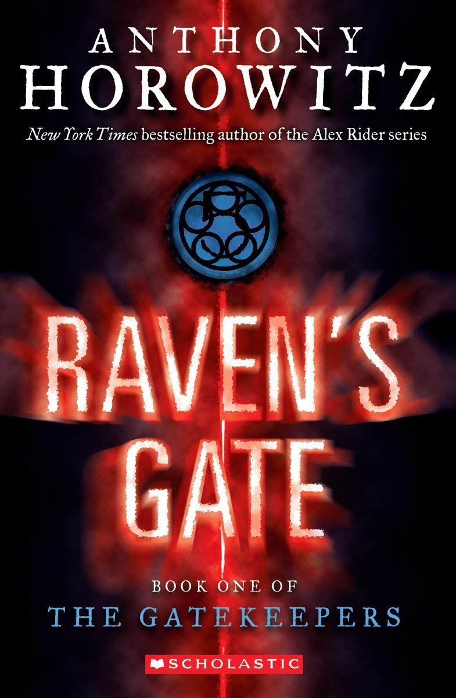
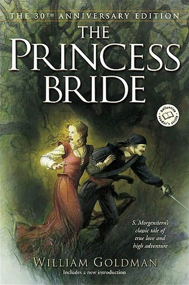
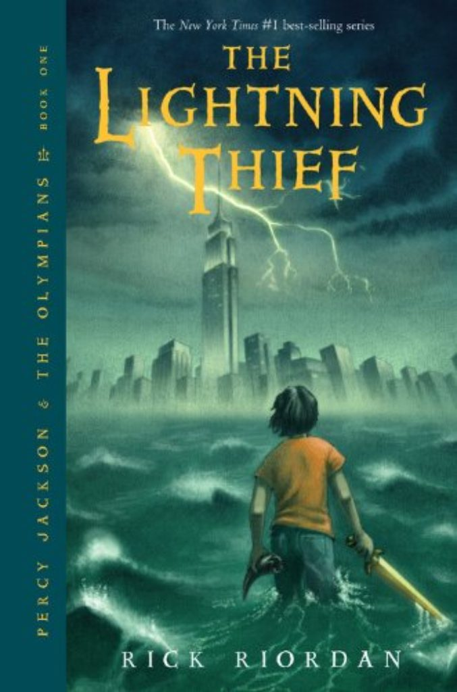
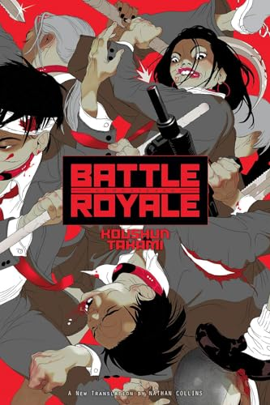

-> As you can probably tell, most recently,
I travelled to Tokyo, Japan, where I went to visit their teamLab exhibit.
Perhaps I was just lucky.. but despite popular belief, it did not smell like feet.
Here are some more random facts about myself:
3 names I find cute for pets:
Click here for my favorite restaurant in LA
I love hot soupy things!
So I love my Galbijjim piping hot
with cheese torched on top.
Lastly, here are my top favorite (the last) 4 books I read maybe some time in high school:
| Title | Cover | Author | Summary (Google AI Overview) |
|---|---|---|---|
| Raven's Gate |  | Anthony Horowitz | Troubled Matt is sent to a foster home where he uncovers an evil plot by witches to use his psychic abilities to unleash ancient evil spirits through the mysterious Raven's Gate. He must escape their control, stop their dark ritual at the abandoned power plant, and prevent the opening of the gate with the help of a reporter. |
| Princess Bride |  | William Goldman | In The Princess Bride, the beautiful Buttercup's farmhand love, Westley, is presumed dead after being attacked by pirates, leading her to reluctantly agree to marry the cruel Prince Humperdinck. Her wedding day is disrupted by her kidnapping by a trio of criminals, who are pursued by a mysterious man in black who turns out to be Westley, leading to a quest to reunite the lovers and thwart the prince's plans. |
| Percy Jackson (series) |  | Rick Riodan | The "Percy Jackson" series follows 12-year-old Percy Jackson, who discovers he is a demigod, the son of Poseidon, and is sent to a summer camp for demigods called Camp Half-Blood. In the first book, The Lightning Thief, Percy must journey across the United States to find Zeus's stolen lightning bolt and prevent a war among the gods. |
| Battle Royale |  | Koushun Takami | a dystopian thriller about a class of junior high students forced to fight to the death on a deserted island by a totalitarian government in an alternate Japan. They are given weapons and explosive collars that detonate if they don't kill each other within a certain time, resulting in a brutal battle for survival. |